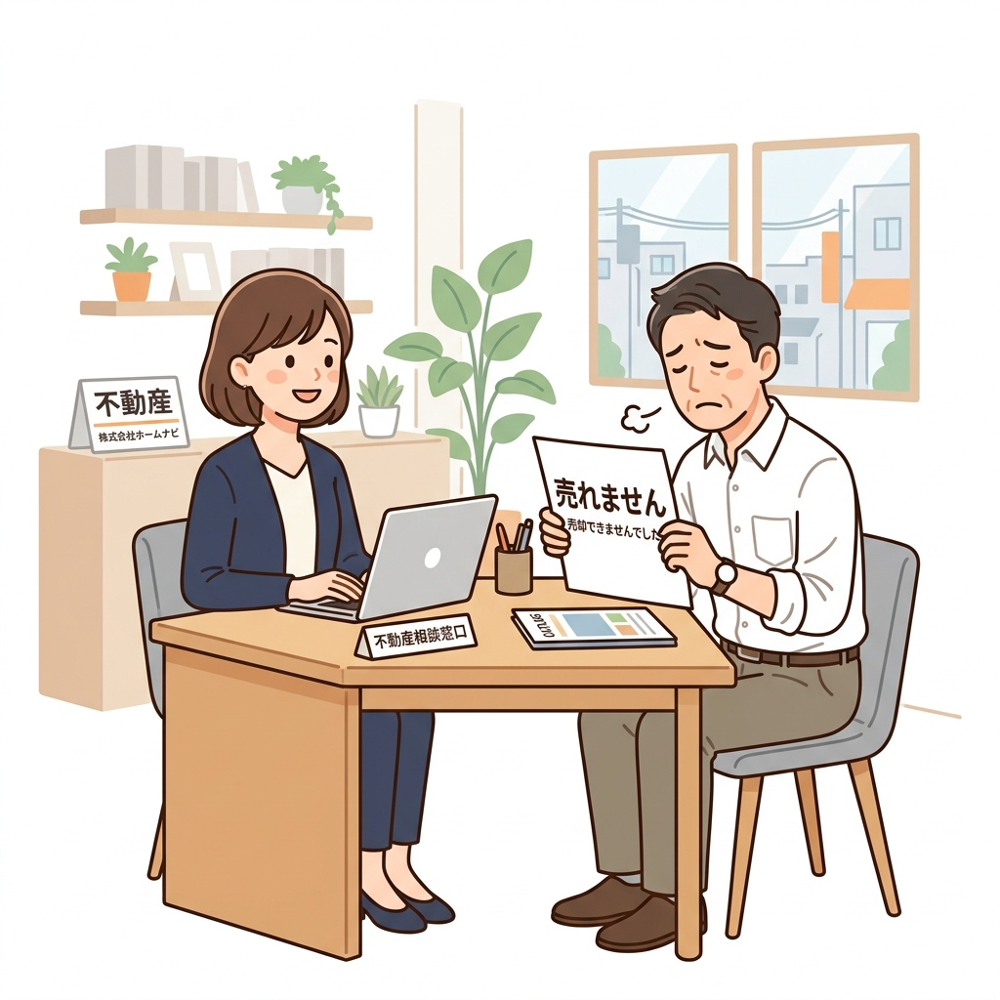
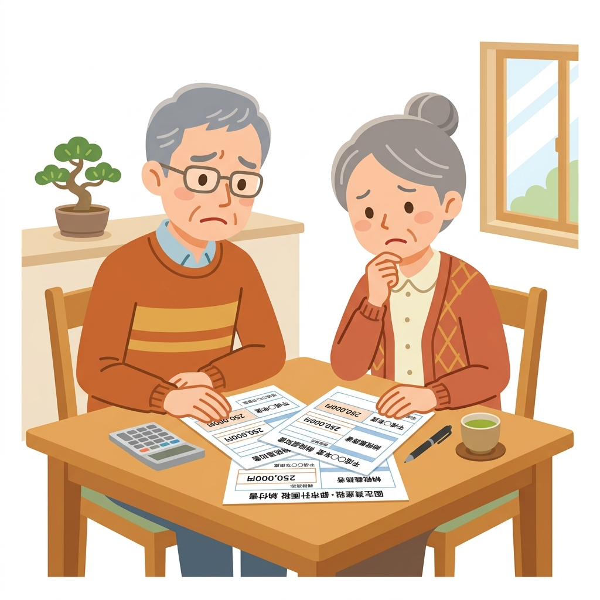
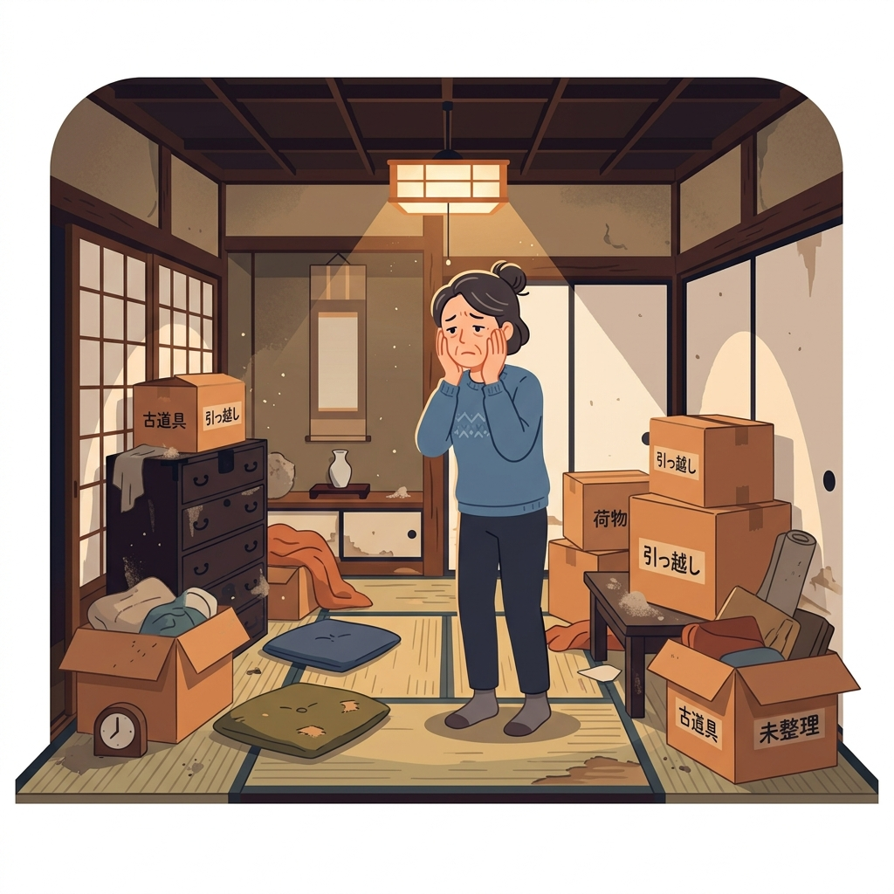
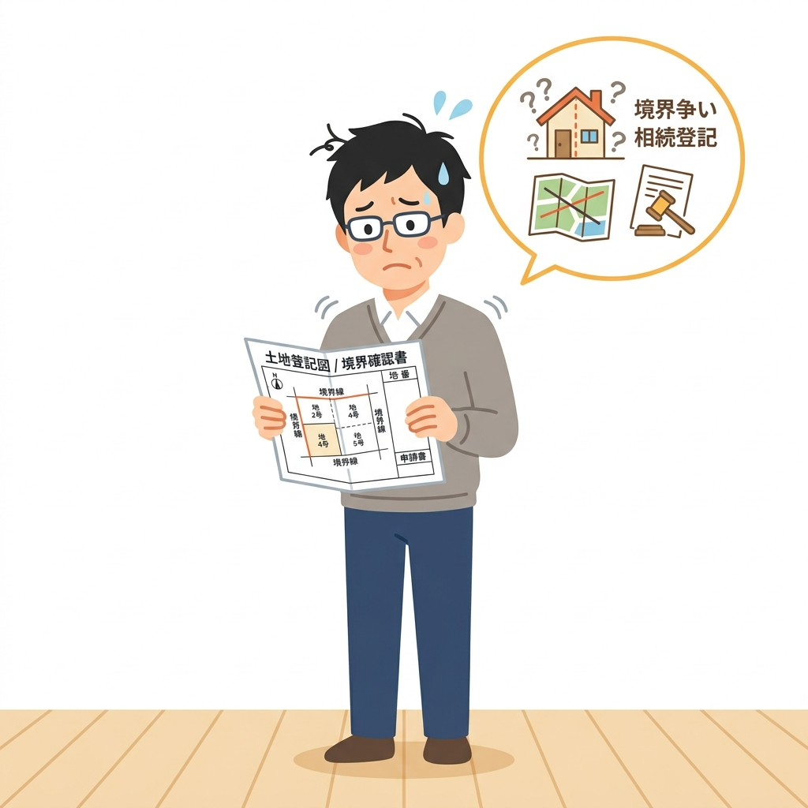
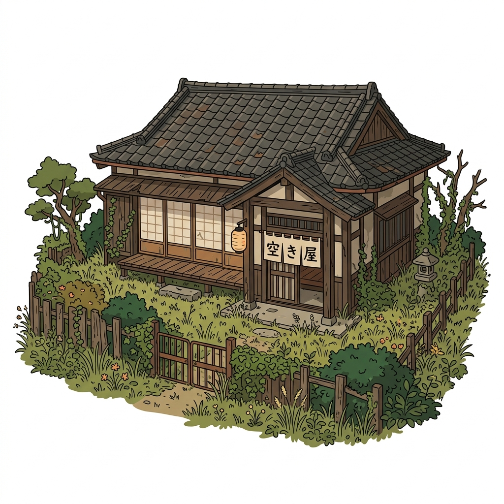
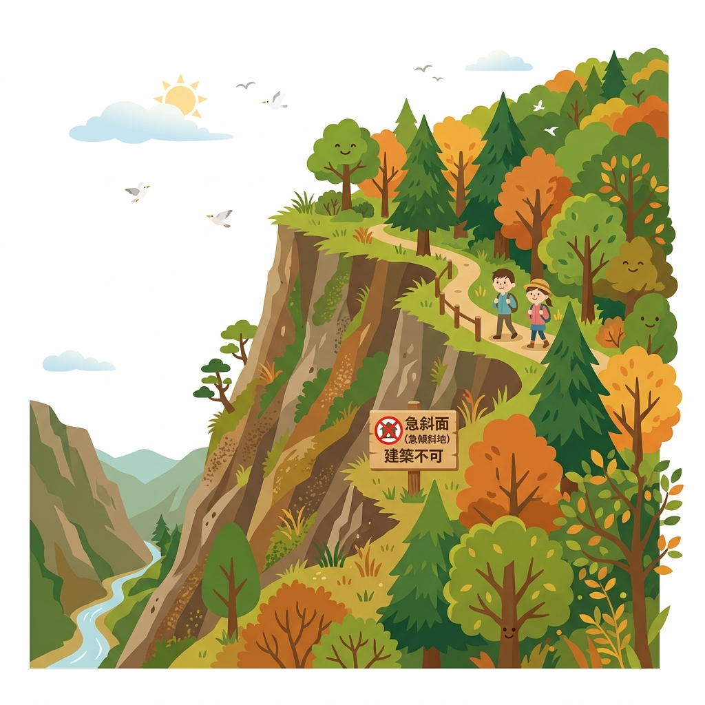
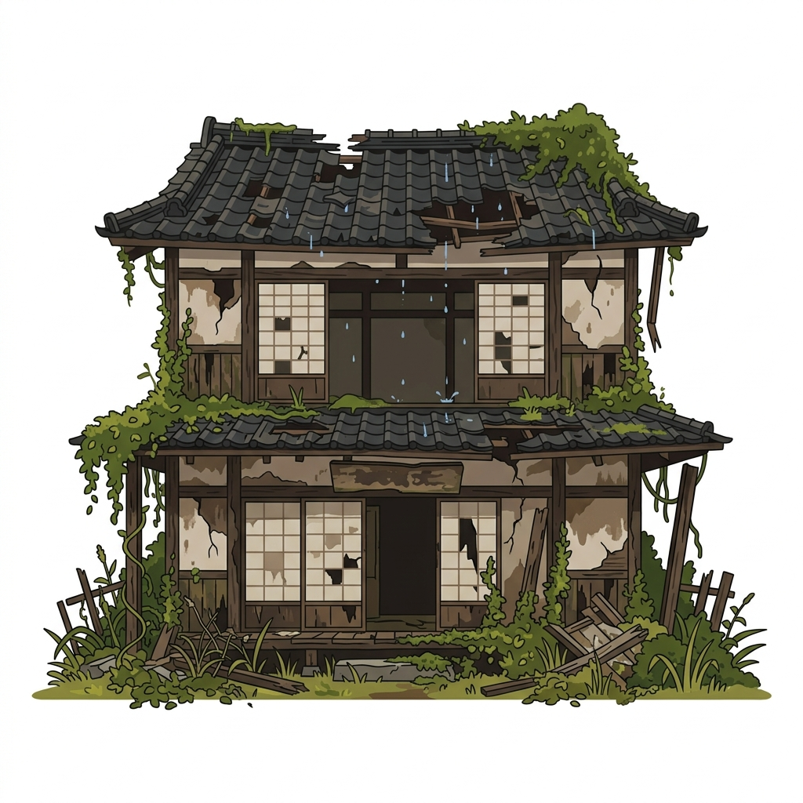
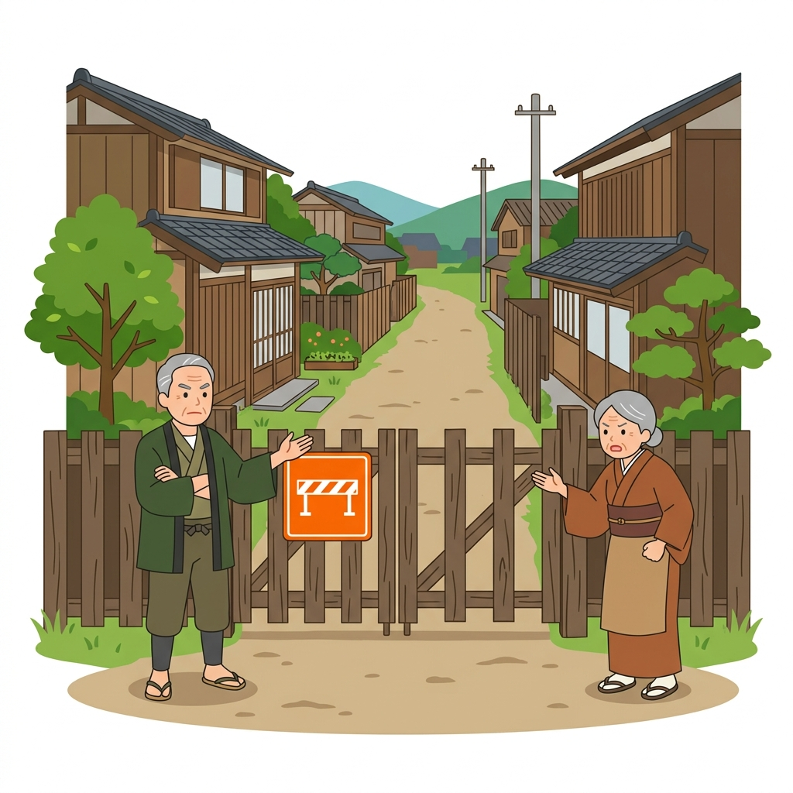
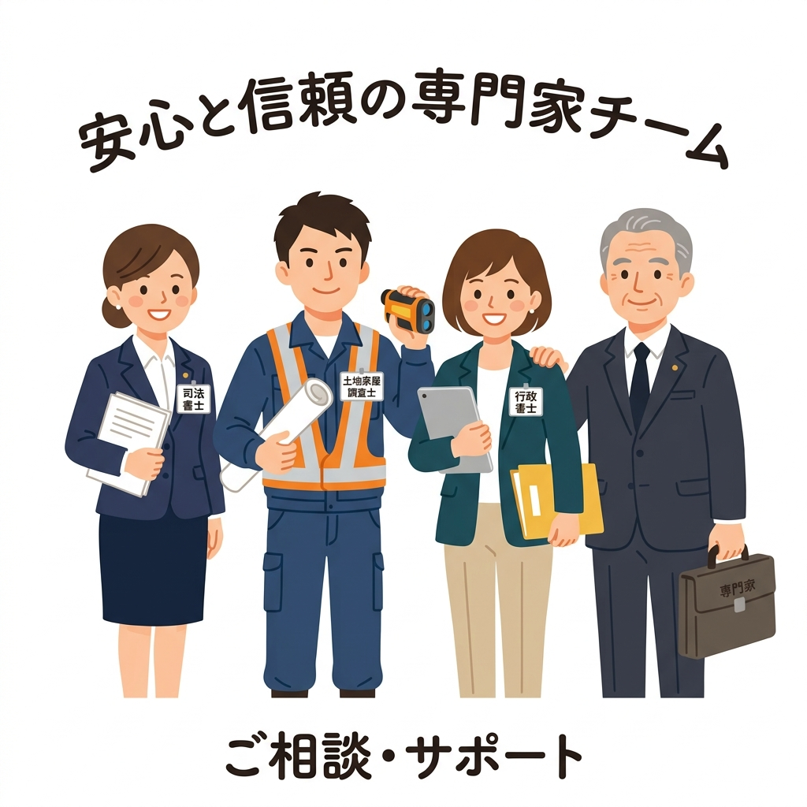

その「空き家」、
お金を払ってでも手放しませんか？
他社で断られた大阪府内の限界ニュータウンや山林、空き家・古民家を、専属の司法書士・土地家屋調査士チームが最短1〜2週間であなたの名義から完全に切り離します。顧客満足度100%を目指す、まったく新しい引き取り代行サービス。

登記引き取り
相談対応

相続した実家や土地、
どうしたら良いの？
処分困難な「負動産」を抱える多くの方が、同じ葛藤を持っています。

どこに相談しても
「売れない」と断られた
仲介も買取も断られ、どこに相談していいか分からない。

毎年、固定資産税や維持費だけを
払い続けている
放置されたまま、維持コストだけが毎年引き落とされ続けている。

家具や荷物が残ったままで
片付ける費用も時間もない
古い家具やゴミが大量に残っており,遠方のため片付けられない。

相続登記の未了や境界の曖昧さで
トラブルにならないか不安
名義が昔のままだったり境界が分からず、揉め事にならないか心配。
不動産会社に「売れない」と断られた物件も、
法的な安心と共にお引き受けします
私たちは、一般の仲介や売買では取引されない、いわゆる「負動産（空き家、古民家、長屋、アパートなど）」の有料処分に特化した専門家チーム窓口です。
「親が残してくれた実家や土地を有料で処分することに、心理的な抵抗感や罪悪感を感じる」という方も少なくありません。しかし、手入れの途絶えた空き家や建物を放置することは、将来的に土砂崩れや倒壊など、地域社会への災害リスクや近隣クレームに繋がってしまいます。私たちの有料引き取りサービスは、単なる「処分」ではなく、安全管理や建物解体、再生を行う信頼できる次の専門事業者へバトンを繋ぐ「未来のためのポジティブな再循環（リサイクル）」です。あなたの代で綺麗に整理し、次の世代や社会資源へと繋ぐための安心の選択肢をご提案します。
「処分できずに子どもに負担を残したくない」「管理責任の不安から解放されたい」というお客様の切実な声に向き合い、提携する司法書士・土地家屋調査士と一丸となって、郵送だけで完了する安全な所有権移転の仕組みを構築しました。
司法書士・土地家屋調査士 専属連携チーム
| 対応内容 | 相続登記未了案件の段取り、所有権の法的な移転登記手続き、実測・境界の法的調整 |
|---|---|
| 対応エリア | 京都府・大阪府・滋賀県・兵庫県・和歌山県（関西全域） |

このような「空き家・建物」のお引き取りを想定しています
「売れない」「手放したい」様々なご状況に合わせた、空き家処分の具体的な想定ユースケースです。

遠方で管理不能な
「実家・空き家」
草木が伸び放題になり、老朽化が進んで近裏クレームや特定空き家に指定される前に対処可能です。
荷物・ゴミだらけの
「ゴミ屋敷・古民家」
片付けやゴミ処分は一切不要。長年の家具や不用品、ゴミが残った「現状有姿」のままお引き取り可能です。

再建築不可の
「老朽空き家・狭小地」
接道条件を満たさず建て替えができない土地や、急傾斜地にある建物も専属の専門家チームが安全に引き取ります。

崩壊寸前・雨漏りだらけの
「危険空き家」
「崩れそうで近隣に危険が及びそう」「雨漏りが酷く修繕費用が出せない」といった放置された状態でも対応いたします。

通行トラブル・
「囲繞地通行権で揉める物件」
今まで無償だった隣地や私道の通行に関し、突然通行料を請求されたり話し合いが拗れてしまった物件もお任せください。
事故物件・
「赤字売却リスクのある物件」
事故物件であるため買い手がつかない、またはリフォーム費用をかけても売れ残るマイナスリスクを完全に解消できます。
「負動産リサイクルセンター 大阪窓口」が選ばれる理由
専属の専門ネットワークがあるからこそできる、安心の処分・引き取り体制
大阪のエリア特性に
完全特化
能勢・豊能の古いニュータウンや千早赤阪・南河内の山林・農地など、大阪の地域特性を熟知した計画を提案します。

相続未了・名義人多数でも
ワンストップ対応
相続登記がまだ終わっていない、共有名義人が多くて進まないなどの複雑な状態でも、専門家チームがすべて代行します。
なぜ「有料引き取り」なのか？
費用をいただく理由と、その透明性について
当サービスは、一般的な「仲介（売って現金化する）」ではなく、「確定したお見積り費用（処分代）を一括でお支払いいただき、当社が所有権と管理責任を引き受ける」スキームです。
お支払いいただく費用の主な内訳（明朗会計）
維持管理コスト
将来数十年にわたって生じる草刈り、見回り、倒壊防止の最低限の管理コストに充当します。
固定資産税の原資
引き取り後も毎年地方自治体へ納付する必要がある固定資産税の長期的原資を確保します。
法的登記手続き費用
提携司法書士への委託報酬、登録免許税など、確実な所有権移転に必要な実費です。
調査・開発費
土地を再定義し、新しい価値へリサイクル（再生・環境管理）するための調査費用です。
引き取り後の「リサイクル」スキーム
社会資源としての再循環（リサイクル）について
専門事業者への引き継ぎによる、価値の再循環：
お引き取りした山林や空き家は、独自のデータ分析や現代のニーズを掛け合わせ、
その分野を専門とする信頼性の高いパートナー事業者へ確実に引き継ぎ（譲渡・提携）を行い、社会へ還元していきます。
建物・古民家再生の専門業者へ引き継ぎ
放置された古民家や空き家は、地域の景観悪化や防犯上の不安材料となります。当センターで引き取った建物や跡地は、地域活性化や不動産再生、土地活用などを行う専門の事業者へ引き継ぎ、適切な維持・活用を目指します。
老朽建物の解体・再開発パートナーへ引き継ぎ
再生が困難なほど老朽化が激しい建物は、安全のため解体を行い、更地としての土地利用や新たな再開発計画を持つパートナー企業へ引き継ぐことで、地域の再生を図ります。
一目でわかる「他社・通常の仲介」との違い
当店の負動産リサイクルが圧倒的に選ばれる理由
| 比較項目 | 通常の不動産仲介 / 他社 | 当店の「負動産リサイクル」 |
|---|---|---|
| 専門家への相談・手配 | 自分で探して個別調整が必要 （司法書士や土地家屋調査士と個別に何度もやり取り…） | 専属のプロ集団がワンストップ連携 （窓口は1つ。裏側でチームが自動連携） |
| 手続きにかかる期間 |
買い手探しや書類のやり取りで 3ヶ月〜1年以上 |
チーム連携による一気通貫の手続きで 最短7日〜2週間 |
法改正で仲介上限「33万円」になっても、
売れない物件は敬遠されます
2024年の宅地建物取引業法の改正により、400万円以下の低廉な空き家等の売買における媒介報酬（仲介手数料）の上限が最大33万円まで受領可能になりました。
しかし、現実には以下の理由から、既存の不動産会社は積極的な仲介を行っていません。
- 買い手がそもそもいない：大阪府内でも山間部やアクセスの悪いオールドニュータウン、古い空き家は、買い手を募っても反響がゼロです。
- 仲介手数料33万円でも割に合わない：調査費用や境界の確認、案内作業など、契約までの手間と交通費を考えると不動産会社にとっては大赤字になります。
あなたが動かなくていい理由
プロ集団の「完全自動連携」により、面倒な手続きをお任せ
専門家チームが裏側でフル稼働。あなたは「待つだけ」
通常の不動産売買では、自分で司法書士を探したり、複雑な相続登記や測量の相談に駆け込んだりと、多くの時間と労力がかかります。
当店では、経験豊富な司法書士や土地家屋調査士と強力なタッグを組んだ「専用の連携システム」を構築しています。
スマホで査定依頼するだけ
対面不要・サインして返送して待つのみ
ワンストップで受付
裏側で各専門家と自動連携・指示配給
登記書類の自動セットアップ
複雑な相続・未登記・境界問題を解決
提携司法書士による「自動登記セットアップ」
あなたが入力・提出したデータに基づき、提携司法書士が契約書や登記書類をスマートに自動作成。郵送だけで確実に所有権移転を完了させます。
複雑な「相続・未登記案件」も100%お任せ
「まだ相続登記が済んでいない」「土地の境界や筆がよく分からない」というややこしい負動産でも、専門家チームがダイレクトに調査・段取りを行うため、トラブルの心配は一切ありません。
安全・適正な取引をお約束する「3つの安心宣言」
お客様の不安を解消し、最後まで法的に安全な取引を徹底いたします。
登記申請完了後の【完全後払い制】
お支払いは、提携司法書士が法務局へ所有権移転登記の「申請手続き」を完了した時点で行います。契約前の手付金や事前調査費用などの前払い請求は一切ありませんのでご安心ください。
お見積り確定後の【追加費用ゼロ】
事前に行う物件情報の調査や現地状況確認に基づき、ご提示した「確定お見積り金額」から、ご契約後に追加の処分費や草刈り代、手数料などを上乗せして請求することは絶対にいたしません。
所有権移転の【法的完了証明】の提示
登記手続きが完了した後、法務局が発行する「登記識別情報通知（旧・権利証）の写し」または「登記事項証明書（登記簿謄本）」を郵送にてお渡しし、法的に名義が離れたことを書面で証明します。
「完全非対面・郵送のみ」の3つのステップ
来店も対面も不要。ご自宅にいながらスピーディに手放せます
スマホから簡単情報入力
公式LINEまたはWebフォームから、物件の住所や分かる範囲の情報を送るだけ。手元に納税通知書や写真があれば、スマホで撮影して添付するだけでさらにスムーズに査定が進みます。
プロによる高速セットアップ（対面不要）
届いた情報を元に、当店と提携司法書士・土地家屋調査士が即座に連携して書類一式を作成し、ご自宅へ郵送します。あなたはサイン and 実印を押して返送するだけです。
最短7日〜で引き取り完了（迅速手続き）
書類が揃えば、チームが一気に所有権移転登記を完了させて手続き終了。固定資産税や維持管理の不安から**100%解放**されます。
よくある質問
お客様から寄せられるご質問に率直にお答えします
A. はい、原則としてどのような物件でもお引き受け可能です。 他社で断られた崖地、再建築不可の狭小地、道路に面していない土地、境界が不明な山林、相続登記が未完了の古い空き家でも問題ありません。専属の土地家屋調査士や司法書士チームが法的な調査から段取りまでダイレクトに行いますので、安心してお任せください。
A. 物件の場所や固定資産税の額、管理状況によって異なりますが、事前調査を元に明確な「確定お見積り（処分代金）」をご提示します。 目安としては、将来数十年にわたる固定資産税や維持管理コストの数年〜十数年分を一括でお支払いいただくイメージです。ご契約後に追加費用を請求することは一切ございません。
A. 提携司法書士が法務局へ所有権移転登記を完了した時点で、あなたからの法的な管理責任および固定資産税の納税義務は100%消滅します。 登記完了後は、法的に名義が離れたことを証明する「登記事項証明書（登記簿謄本）」などの公的書面の写しを郵送にてお渡しいたします。
A. いいえ、完全に「対面不要・非対面」で手続きが完了します。 スマホやLINEでの査定後、契約書類や登記必要書類をご自宅へ郵送いたします。お客様は内容をご確認の上、サインと実印を押して返送していただくだけですので、遠方にお住まいの方でも自宅にいながら簡単にお手続きいただけます。
はい、そのままご相談いただけます。当センターの提携司法書士チームが、相続人の調査や必要な登記手続きの整理など、引き取りに必要な相続登記の段取りからワンストップで代行・サポートいたしますので、安心してお気軽にご相談ください。
大阪府の負動産問題、
私たちにお任せください。
「もう手放したい」「次の世代にこの悩みを残したくない」とお考えなら、今すぐ第一歩を踏み出しましょう。 私たちは地元での信頼と誠実な対応をお約束いたします。
スマホで物件の写真や納税通知書の写真を送るだけ！24時間いつでも簡単に査定依頼が可能です。専門家チームへの相談もLINEからワンタップで行えます。
【安心の3つの約束】お見積り確定後の追加費用ゼロ / 登記完了後の完全後払い制 / 国土交通省ガイドライン準拠